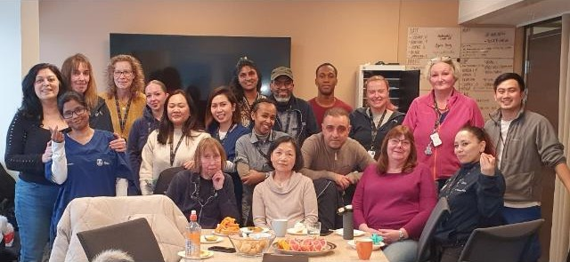
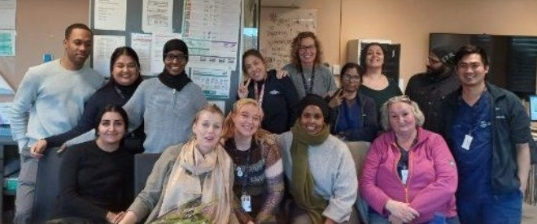
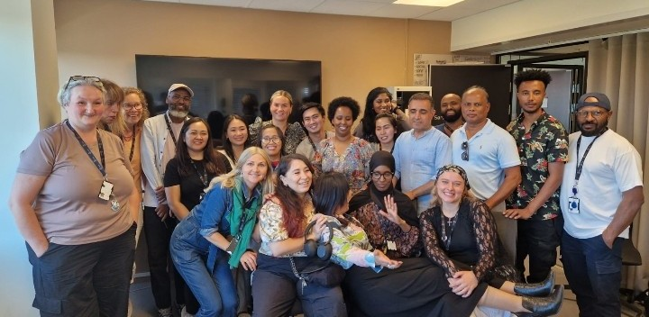

Team Sør




Team Sør – Hjemmesykepleien i Bydel Gamle Oslo
Velkommen til Team Sør
Denne nettsiden er laget som et praktisk oppslagsverk for ansatte og studenter. Her finner du rutiner, prosedyrer, nyttige tips og informasjon som kan gjøre arbeidshverdagen litt enklere. Hos Team Sør er vi opptatt av å ta vare på hverandre og skape trygghet – både for brukerne våre og for kollegaene våre. Enten du er ny hos oss eller har jobbet her i mange år, håper vi at denne siden blir et nyttig verktøy i hverdagen. Vi oppfordrer alle til å dele erfaringer, stille spørsmål og bidra til at vi sammen utvikler siden videre. Takk for innsatsen du gjør – hver eneste dag.
**Velkommen til Team Sør!**
- 👉 Merkantil: Silje -------> telefonnummer 99285016
- 👉 Teamleder: Ane -------> telefonnummer 40762855
- 👉 Fagsykepleier: Fadumo